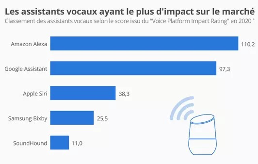

Derniers avancée aux sujet des assistants vocaux intelligents
Vous pouvez suivre les différents cycles de recherche en cliquant ci-dessous:
Veille technologique

Derniers avancée aux sujet de des assistants vocaux intelligent

Tous les matins, le Nest Hub 2e génération délivre
un compte rendu du sommeil :
le temps total de sommeil, le temps passé au lit
avant de s'endormir et l'heure exacte
à laquelle l'utilisateur s'est endormi.

Cet article concerne Google Assistant
l’un des principaux concurrents de Siri.
Google Assistant
est désormais capable de retrouver votre iPhone.
Effectivement, lors de sa récente annonce,
Google explique que son assistant vocal sera
désormais en mesure de vous aider à retrouver votre iPhone.
Il suffira de demander à votre enceinte Nest :
“Ok Google, trouve mon téléphone”,
pour que Google Assistant se mette en relation avec
“Localiser“.

Spotify a lancé officiellement son propre assistant vocal.
La fonctionnalité d’assistant vocal n’est pas réservée
aux smartphones sous Android,
puisqu’elle est également déployée sur iOS
comme l’indique le service sur son blog.
« Hey Spotify a été lancé récemment
chez certains utilisateurs aux États-Unis
sur les appareils iOS et Android »,
précise cependant la plateforme.
Pour l’heure, aucune disponibilité
en langue française n’a donc été annoncée.